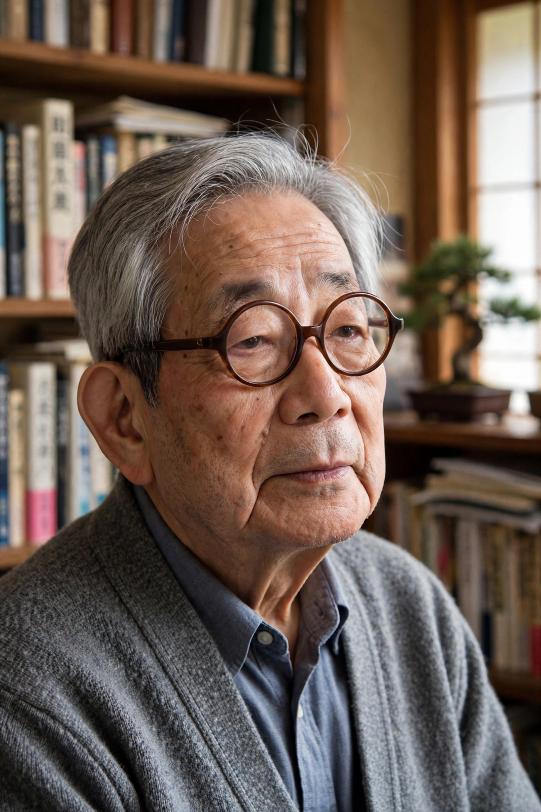

Kenzaburō Ōe (Japanese: 大江 健三郎; 31 January 1935 – 3 March 2023) was a Japanese writer and a major figure in contemporary Japanese literature. Strongly influenced by French and American literature and by literary theory, his novels, short stories, and essays concern political, social, and philosophical themes, including nuclear weapons, the Emperor system, and the experience of raising a child with a disability. He won the Nobel Prize in Literature in 1994, the second Japanese author so honored after Yasunari Kawabata.
| Kenzaburō Ōe | |
|---|---|
 Ōe in later life | |
| Born | 31 January 1935, Ōse, Ehime, Japan |
| Died | 3 March 2023 (aged 88), Tokyo, Japan |
| Occupation | Novelist, short-story writer, essayist |
| Nationality | Japanese |
| Notable works | A Personal Matter; The Silent Cry; Nip the Buds, Shoot the Kids |
| Awards | Akutagawa Prize (1958); Nobel Prize in Literature (1994) |
Ōe was born in Ōse, a village in the forests of Shikoku, the third of seven children. His grandmother taught him storytelling; his father died in the Pacific War in 1944. Educated in the first postwar cohort under the democratized school system, he went on to study French literature at the University of Tokyo, where he absorbed the works of Sartre, Camus, and Rabelais and wrote student fiction. His story "Shiiku" ("The Catch") won the Akutagawa Prize in 1958, and his first novel, Nip the Buds, Shoot the Kids, appeared the same year.
Ōe's early fiction portrayed postwar Japan's degradation and the violence of the American occupation era. A turning point came in 1963: his first son, Hikari, was born with a brain hernia and intellectual disability, and Ōe traveled to Hiroshima to report on the survivors of the atomic bombing. The twin experiences produced Hiroshima Notes (1965) and the novel A Personal Matter (1964), in which a father confronts fantasies of killing his disabled newborn before choosing responsibility. The Silent Cry (1967), his most celebrated novel, interweaves a failed 1960s revolt with a suppressed 1860 peasant uprising in his home village. Later works, including the "Flaming Green Tree" trilogy and the novel Somersault, pursued themes of salvation, myth, and peripheral culture versus the center.
In 1994 the Swedish Academy awarded him the Nobel Prize, citing an author who "with poetic force creates an imagined world, where life and myth condense to form a disconcerting picture of the human predicament today". The same year he declined Japan's Order of Culture, objecting to an award conferred by the Emperor, and accepted the government's criticism with characteristic stubbornness.
Ōe was a prominent voice of the Japanese postwar left: he campaigned against nuclear weapons and nuclear power, defended Article 9 of the constitution (the "peace clause") as a co-founder of the Article 9 Association, and was sued — ultimately successfully defended — over his account of mass suicides during the Battle of Okinawa in Okinawa Notes. After the 2011 Fukushima disaster he spoke at large anti-nuclear rallies. He died in Tokyo on 3 March 2023 at the age of 88. His son Hikari Ōe became a noted composer.
From Wikipedia, the free encyclopedia (recreated from memory).